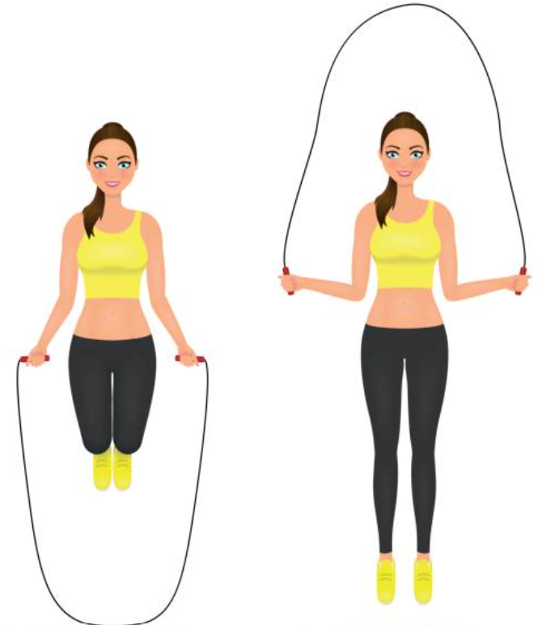

🌱 Calentamiento de hombro y biceps


Para hacer correctamente espalda se debe calentar el hombro para todos los movimientos, y tambien el biceps:
Lo importante aqui es mover las articulaciones, tanto de hombros, biceps y muñecas.
Lo puedes mezclar con 2 series del siguiente ejercicio, pero sin peso, es solo movilidad. Calentar motores.
🌱 Bi-serie, jalones con 2 agarres


Bi-serie de jalones, primero con agarre abierto, y luego con agarre supino. Concentrate en la espalda, no en los brazos. Siente como trabajan los dorsales.
Usa el mismo agarre(barra) para ambos ejercicios, haz repeticiones rapidas.
🎥 Jalon espalda supino
👌 Bi-serie de remos


Biserie de remos, (ten los dos agarres listos, el cerrado y uno abierto) primero con agarre abierto, y luego con agarre cerrado. Concentrate en la espalda, no en los brazos. Siente como trabajan los dorsales.
Debes llevar las manos hacia la barriga, para que se active el dorsal, y no los biceps.
💪 Bi-serie de biceps

Curl de bíceps y curl de bíceps martillo, ambos con mancuernas. Concentrate en los biceps.
Siente como trabajan los biceps.
Tambien puedes usar poleas (una barra para el curl normal y una cuerda para martillo)
⭐ Salto de lazo

Salta la cuerda a un ritmo cómodo y constante. Mantén los codos cerca del cuerpo y gira la cuerda principalmente con las muñecas. Salta apenas lo necesario para que pase la cuerda y aterriza suavemente sobre la parte delantera de los pies. Si aún no dominas el salto, practica sin cuerda o alterna saltos pequeños con pausas.
🎥 Ver salto de lazo 🎥 Ver otra demostración🏆 Lo Lograste
Terminaste un entrenamiento más.
Ahora si a mimir o empezar el dia 🤣.
❤️ Estoy muy orgulloso de ti. ❤️